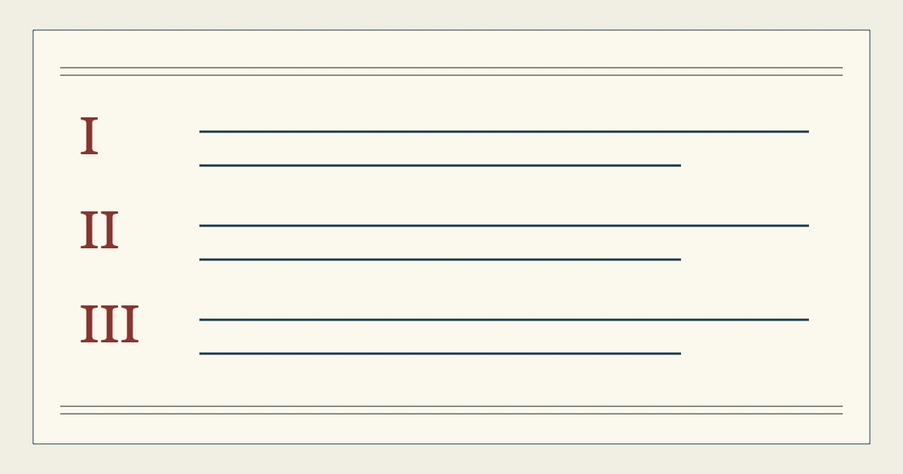

%%A9_EYEBROW%%
%%A9_TITLE%%
%%A9_SUMMARY%%- 撰写
- %%AUTHOR_NAME%%
- 刊载
- %%A9_PUBLISHED%%
- 复核
- %%A9_CHECKED%%
本篇版目
%%A9_H2_1%%
%%A9_TEXT_1%%
%%A9_CROSS_HEAD_1%%
%%A9_CROSS_TEXT_1%%
%%A9_CROSS_HEAD_2%%
%%A9_CROSS_TEXT_2%%
%%A9_CROSS_HEAD_3%%
%%A9_CROSS_TEXT_3%%
%%A9_H2_2%%
%%A9_TEXT_2%%
%%A9_H2_3%%
%%A9_TEXT_3%%
%%A9_SECOND_QUOTE%%
%%A9_H2_4%%
%%A9_TEXT_4%%
%%A9_FAQ_TITLE%%
展开问答
- %%A9_FAQ_Q_1%%
- %%A9_FAQ_A_1%%
- %%A9_FAQ_Q_2%%
- %%A9_FAQ_A_2%%
- %%A9_FAQ_Q_3%%
- %%A9_FAQ_A_3%%